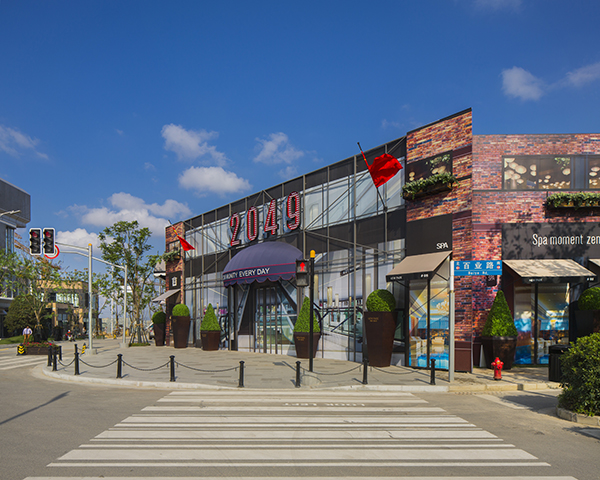
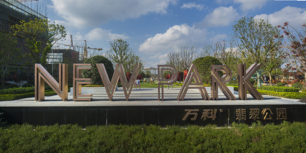

万科集团（上海）
“让建筑赞美生命”万科企业股份有限公司成立于1984年，1988年进入房地产行业，1991年成为深圳证券交易所第二家上市公司。
万科认为，坚守价值底线、拒绝利益诱惑，坚持以专业能力从市场获取公平回报，是万科获得成功的基石。公司致力于通过规范、透明的企业文化和稳健、专注的发展模式，成为最受客户、最受投资者、最受员工、最受合作伙伴欢迎，最受社会尊重的企业。凭借公司治理和道德准则上的表现，公司连续八次获得“中国最受尊敬企业”称号。
经过多年努力，万科逐渐确立了在住宅行业的竞争优势：“万科”成为行业第一个中国驰名商标，旗下“四季花城”、“城市花园”、“金色家园”等品牌得到各地消费者的接受和喜爱；公司研发的“情景花园洋房”是中国住宅行业第一个专利产品和第一项发明专利；公司物业服务通过全国首批ISO9002质量体系认证；公司创立的万客会是住宅行业的第一个客户关系组织。同时也是国内第一家聘请第三方机构，每年进行全方位客户满意度调查的房地产企业。
自创建以来，万科一贯主张“健康丰盛人生”，重视工作与生活的平衡；为员工提供可持续发展的空间和机会，鼓励员工和公司共同成长；倡导简单人际关系，致力于营造能充分发挥员工才干的工作氛围。2011年，在全球人力资源咨询公司翰威特组织的“2011年中国最佳雇主”评选中，被评为全球TOP25最佳雇主企业，连续两年蝉联“中国最佳雇主”。
“让建筑赞美生命”是万科企业的核心理念，也是万科坚持的产品核心价值观。万科始终不懈地致力于为不同消费者提供展现自我、和谐共生的理想生活空间，保护环境、改善环境，促进人与自然的可持续发展。

